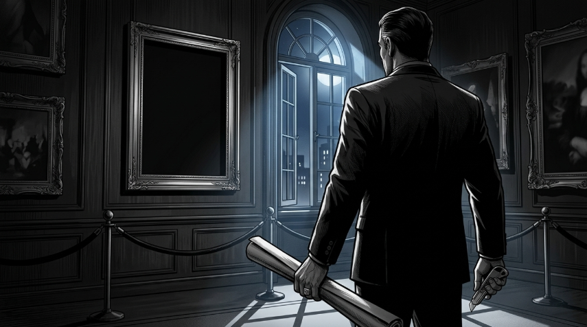
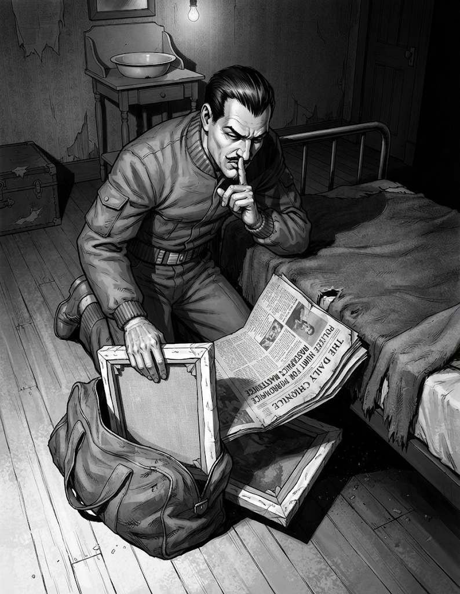
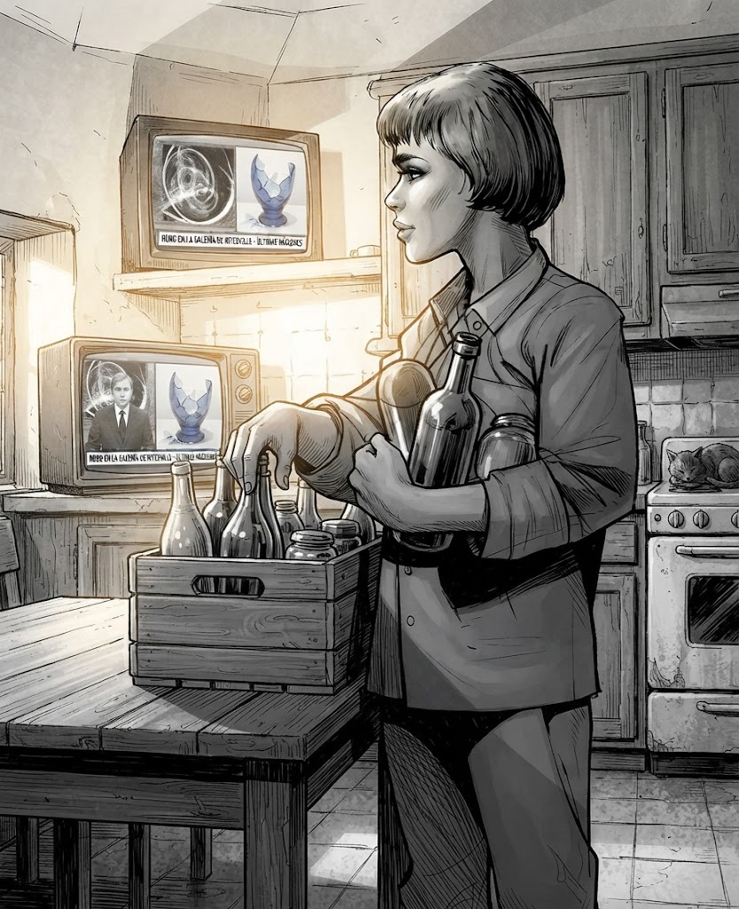
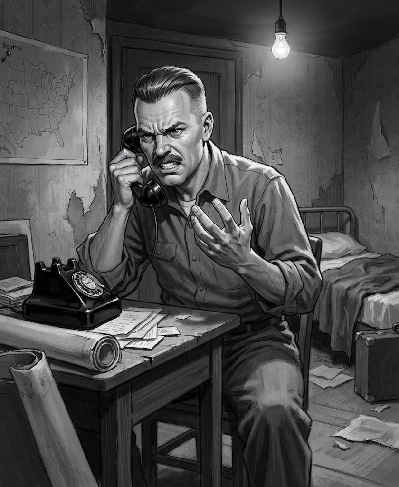
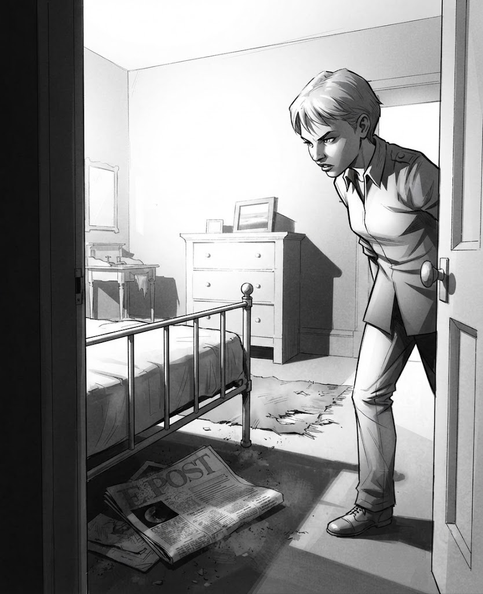
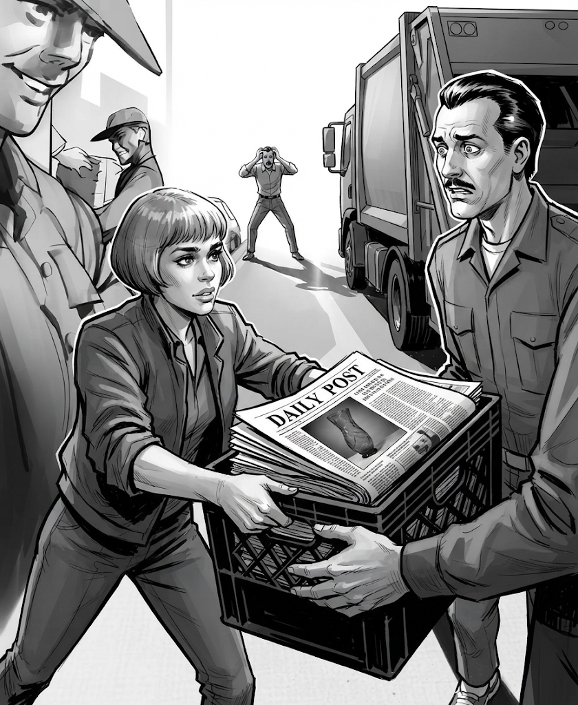
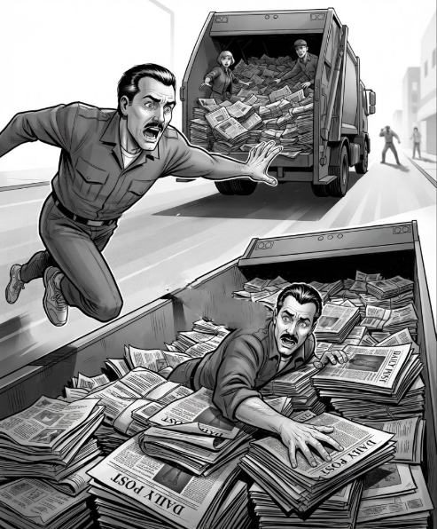
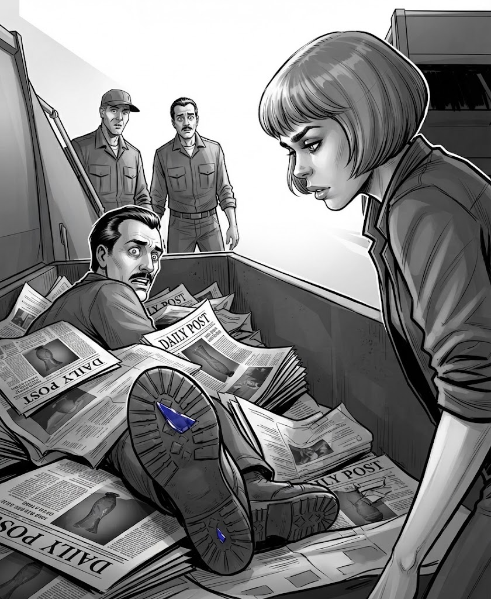
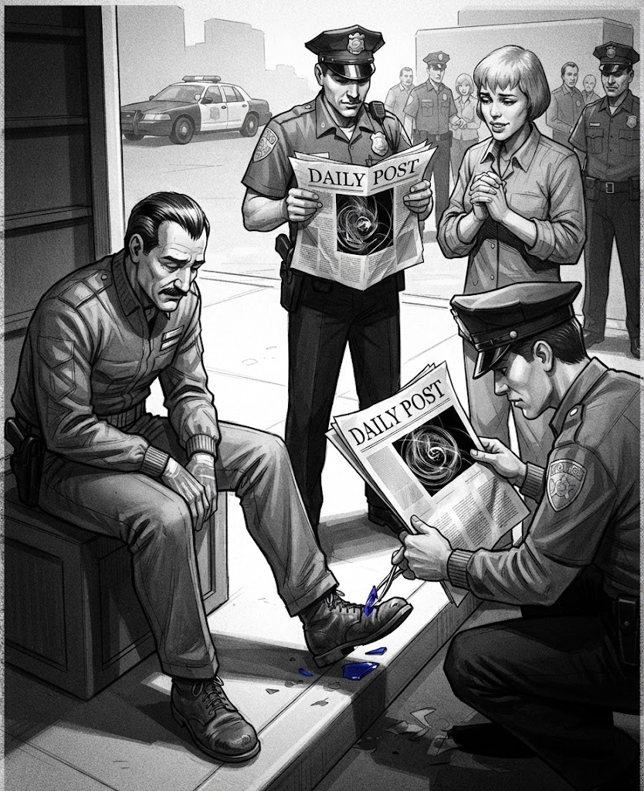

Section 1: The Robbery

The time is one o'clock in the morning.
The place is the Ritesville town art gallery.
A window opens and a man comes in. It's Harry Black. He is a thief.
He looks at the painting. It is a painting of a woman.
Harry moves quickly across the room. He stands and looks at the painting.
"A million dollars for this?" he thinks. "I don't understand it."
But he takes a knife from his coat.
Then he takes the painting very, very slowly from its frame.
Comprehension Check
Where does the story begin?
Section 2: The Broken Vase
Harry goes back across the room to the window, but he walks into a table.
There is a beautiful blue glass vase on the table.
It falls on the floor and breaks into a hundred pieces.
Harry smiles. "Is that a million-dollar vase?" he thinks. "It isn't now!"
He runs across the pieces of glass to the window.
Comprehension Check
What breaks into a hundred pieces?
Section 3: The Hiding Place

Harry has a room in Mrs. Allen's rooming house.
He goes quietly up to his room and closes the door.
Mrs. Allen and her daughter, Janey, are sleeping. They don't hear him.
In his room, Harry takes the painting from his bag. He puts it in a newspaper, then he puts the newspaper under his bed.
Comprehension Check
What does Harry do with the painting once he is in his room?
Section 4: The Next Morning

In the morning, Janey Allen is in the kitchen. She is putting old bottles into a box.
"Recycling is important," Janey thinks.
On the TV, a reporter is at the Ritesville art gallery. He is talking about the painting.
"It's a million-dollar painting," he is saying. "Here's a photo of it."
Now the reporter is talking about the blue glass vase. "It's in a hundred pieces now," he says.
Janey looks at the photo of the vase, then she asks her mother, "Do you have any old bottles?"
"No," Mrs. Allen says. "That's all, Janey. But the newspaper recycling truck is coming today."
"Of course!" Janey says. "It's Friday!"
Comprehension Check
What does Janey realize when she talks to her mother?
Section 5: The Telephone Call

Harry isn't in his room. He is talking on his telephone to a man in Seattle.
The man wants the painting, but Harry isn't happy.
"Five thousand dollars?" Harry says. "No! It's a million-dollar painting!"
"... What? ..."
"No, I want fifty thousand, not five!"
"... What? ..."
"The painting? Yes, I have it, and it's OK."
Comprehension Check
Why is Harry unhappy during his telephone conversation?
Section 6: Janey Finds the Newspaper

Janey is looking for old newspapers. Early on Friday mornings, she takes them from every room in the house.
Then later, the newspaper recycling truck arrives.
Janey opens Harry's door and looks into his room. She always takes his old newspapers or bottles for recycling.
"Ah!" she thinks. "There's a newspaper under Harry's bed."
Comprehension Check
What does Janey find under Harry's bed?
Section 7: The Recycling Truck

Janey puts the old newspapers into a black recycling box. She runs from the house and sees the truck.
"Wait!" she says. And she quickly gives the box to one of the men.
Harry is coming back to the house. He sees the recycling truck, and he sees Janey.
"It's Friday!" he says. "The newspaper — ! Oh, no!"
Comprehension Check
What does Harry realize when he sees Janey and the truck?
Section 8: Chasing the Truck

Harry chases after the truck. "Wait! Wait!" he says.
Janey watches him. "What is he doing?" she thinks.
Harry jumps into the back of the truck. "I want my newspaper!" he says. "Where's my newspaper?"
But there are thousands of newspapers in the truck.
Comprehension Check
What does Harry do when he reaches the recycling truck?
Section 9: The Piece of Glass

Janey walks quickly from the house to the truck. "Why is your newspaper important, Harry?" she asks. "It's two days old."
But Harry doesn't hear her. He is thinking, "My million-dollar painting! Where is it?"
The men from the recycling truck are watching Harry, too. But now Janey is looking at Harry's shoe.
"There's some blue glass in Harry's shoe," Janey thinks. "Where — ? Oh!"
Suddenly, she remembers the photo of the blue glass vase on the TV.
Comprehension Check
What does Janey remember when she sees the blue glass in Harry's shoe?
Section 10: The Police Arrive

The men from the recycling truck are angry. "We're going now," they are saying. "We're late."
"But I want my newspaper!" Harry says.
In the house, Janey is talking to the police on the telephone. "Maybe I'm wrong," she is saying. "But there's blue glass in his shoe... What?... Yes, he's looking for the newspaper now."
Two policemen arrive quickly. "Let's look at your shoe," they say to Harry.
One of the policemen takes the glass from Harry's shoe. "This is a very expensive piece of glass," he says. "From a very expensive vase. Remember?"
Suddenly, Harry understands. "Oh, no!" he says.
Later, they find the right newspaper—and they find the painting. "Good work, Janey," one of the policemen says. "And there's a reward."
Comprehension Check
What do the police find in the truck later?
🎉 Final Results & Summary
You have completed the entire story! Here is your performance overview:
0%
Correct: 0/10
Incorrect: 0/10